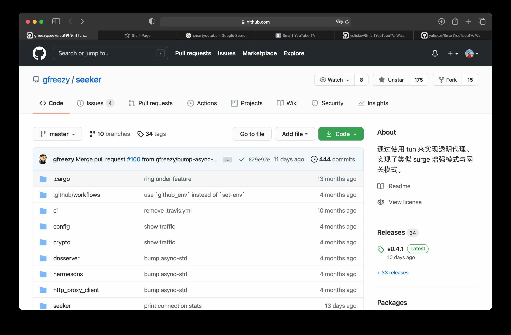

How to Watch YouTube on TV | Generated by AI
This guide assumes you already have a way to bypass geo-restrictions. Here’s how to watch YouTube on your TV without flashing custom firmware on your router—just use an app.
SmartYouTubeTV

-
Download and Install: Download the app and sideload it onto your TV using a USB drive.
- Configure Proxy:
- On your proxy client (e.g., Clash), enable “Allow connections from LAN” to permit local network devices to route traffic through your machine.
- In SmartYouTubeTV, navigate to settings and enter your proxy details (e.g.,
192.168.1.3:7890). Note: Use SOCKS5 (HTTP proxies failed in testing). Replace192.168.1.3with your machine’s local IP.
- Test and Confirm: Click “Test” in the app to verify connectivity. If successful, save the settings and start streaming.


gfreezy/seeker (Transparent Proxy)
A GitHub project that turns your computer into a proxy gateway using TUN (similar to Surge’s enhanced/gateway modes). Below are key notes and a working config:
Configuration (config.yml)
verbose: true
dns_start_ip: 10.0.0.10
dns_servers:
- 223.5.5.5:53
- 114.114.114.114:53
dns_timeout: 1s
tun_name: utun4
tun_ip: 10.0.0.1
tun_cidr: 10.0.0.0/16
dns_listen: 0.0.0.0:53
gateway_mode: true
ping_timeout: 2s
probe_timeout: 30ms
connect_timeout: 1s
read_timeout: 30s
write_timeout: 5s
max_connect_errors: 2
servers:
- name: http proxy server
addr: 0.0.0.0:7890
protocol: Http
- name: https proxy server
addr: 0.0.0.0:7890
protocol: Https
rules:
- 'MATCH,PROXY'
Why Not SOCKS5?
Initially, I tried SOCKS5:
servers:
- name: socks5 proxy server
addr: 0.0.0.0:7891
protocol: Socks5
But it caused connection loops (per the docs), requiring explicit direct-connection rules for domains. HTTP/HTTPS proxies were more stable.
Trade-offs
- Seeker: Requires a dedicated machine acting as a router.
- Proxy Mode (SmartYouTubeTV): Flexible—works with phones/tablets sharing a proxy port.

TV Screenshots (Xiaomi TV)
To capture screenshots:
- Double-press the
Homebutton on the remote to open the app manager. - Select the screenshot button and share via WeChat (or other apps).
- Use this menu to force-close frozen apps.

Enjoy the big-screen experience!
Update (September 2025)
Apple TV now supports VPN software natively. You can install Shadowrocket to connect to your proxy server and stream YouTube TV directly.